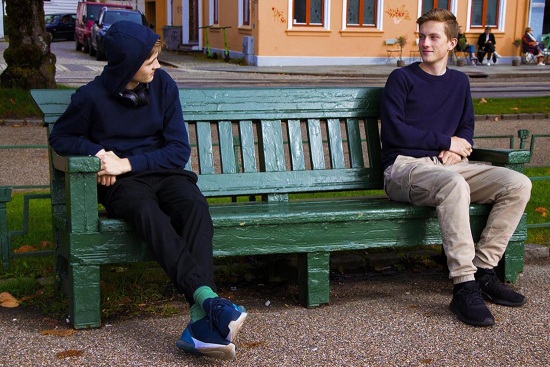
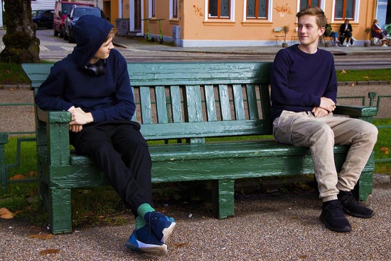

Produksjon og Historiefortelling
Reklamefilm for Amalie Skram Videregående Skole
Fotohistorie
Her kan bildene fortelle forskjellige historier ved å lese de i forskjellige rekkefølger



Her kan bildene fortelle forskjellige historier ved å lese de i forskjellige rekkefølger

Korona Dagbok